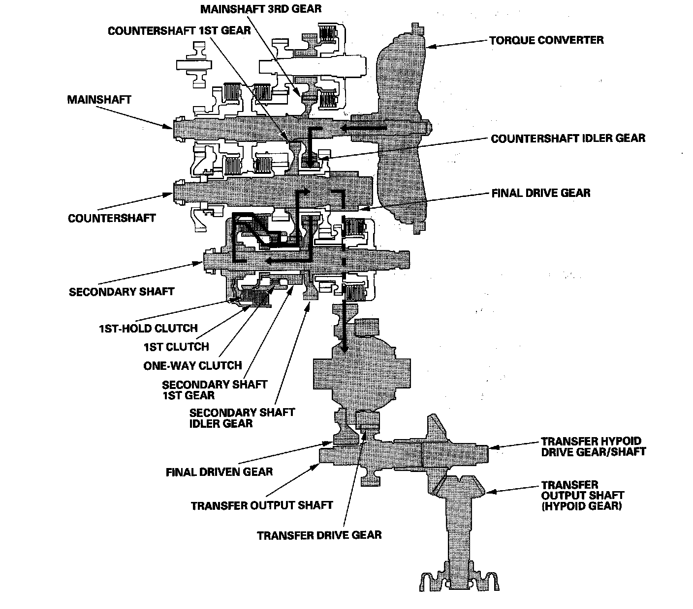

Power Flow
Power FlowP Position
Hydraulic pressure is not applied to the clutches. Power is not transmitted to the countershaft. The countershaft is locked by the park pawl interlocking the park gear, secondary shaft 2nd gear, and countershaft 2nd gear.
N Position
Engine power transmitted from the mainshaft drives the mainshaft 3rd gear, the intermediary shaft 3rd gear, but hydraulic pressure is not applied to the clutches. Power is not transmitted to the countershaft. In this position, the position of the reverse selector differs according to whether the shift lever shifted from the D or R position:
^ When shifted from the D position, the reverse selector engages with the countershaft 5th gear and the reverse selector hub, and the 5th gear engages with the countershaft.
^ When shifted from the R position, the reverse selector engages with the countershaft reverse gear and the reverse selector hub, and the reverse gear engages with the countershaft.
D and D3 Positions
In the D and D3 positions, the optimum gear is automatically selected from the 1st, 2nd, 3rd, 4th, and 5th gears in the D position; and 1st, 2nd, and, 3rd gears in the D3 position according to conditions such as the balance between the accelerator pedal opening (engine loading) and vehicle speed.
In 1st gear
^ Hydraulic pressure is applied to the 1st clutch, then the 1st clutch engages the secondary shaft 1st gear with the secondary shaft by the one-way clutch.
^ The mainshaft 3rd gear drives the secondary shaft via the countershaft idler gear and secondary shaft idler gear.
^ The secondary shaft 1st gear drives the countershaft 1st gear and the countershaft.
^ Power is transmitted to the final drive gear, which in turn drives the final driven gear and the transfer drive gear.
^ The transfer output shaft drives the transfer hypoid drive gear/shaft and the transfer output shaft (hypoid gear).
In 2nd gear
^ Hydraulic pressure is applied to the 2nd clutch, then the 2nd clutch engages the secondary shaft 2nd gear with the secondary shaft.
^ The mainshaft 3rd gear drives the secondary shaft via the countershaft idler gear and secondary shaft idler gear.
^ The secondary shaft 2nd gear drives the countershaft 2nd gear and the countershaft.
^ Power is transmitted to the final drive gear, which in turn drives the final driven gear and the transfer drive gear.
^ The transfer output shaft drives the transfer hypoid drive gear/shaft and the transfer output shaft (hypoid gear).
^ Hydraulic pressure is also applied to the 1st clutch, but since the rotation speed of 2nd gear exceeds that of 1st gear, power from 1st gear is cut off at the one-way clutch.
In 3rd gear
^ Hydraulic pressure is applied to the 3rd clutch, then the 3rd clutch engages the intermediary shaft 3rd gear with the intermediary shaft.
^ The mainshaft 3rd gear drives the intermediary shaft 4th gear via the intermediary shaft 3rd gear and the 3rd clutch.
^ The intermediary shaft 4th gear drives the countershaft 4th gear and the countershaft via the mainshaft 4th gear.
^ Power is transmitted to the final drive gear, which in turn drives the final driven gear and the transfer drive gear.
^ The transfer output shaft drives the transfer hypoid drive gear/shaft and the transfer output shaft (hypoid gear).
^ Hydraulic pressure is also applied to the 1st clutch, but since the rotation speed of 3rd gear exceeds that of 1st gear, power from 1st gear is cut off at the one-way clutch.
In 4th gear
^ Hydraulic pressure is applied to the 4th clutch, then the 4th clutch engages the mainshaft 4th gear with the mainshaft.
^ The mainshaft 4th gear drives the countershaft 4th gear and the countershaft.
^ Power is transmitted to the final drive gear, which in turn drives the final driven gear and the transfer drive gear.
^ The transfer output shaft drives the transfer hypoid drive gear/shaft and the transfer output shaft (hypoid gear).
^ Hydraulic pressure is also applied to the 1st clutch, but since the rotation speed of 4th gear exceeds that of 1st gear, power from 1st gear is cut off at the one-way clutch.
In 5th gear
^ Hydraulic pressure is applied to the servo valve to engage the reverse selector with the countershaft 5th gear while the shift lever in the D position.
^ Hydraulic pressure is applied to the 5th clutch, then the 5th clutch engages the mainshaft 5th gear with the mainshaft.
^ The mainshaft 5th gear drives the countershaft 5th gear, which drives the reverse selector hub and the countershaft.
^ Power is transmitted to the final drive gear, which in turn drives the final driven gear and the transfer drive gear.
^ The transfer output shaft drives the transfer hypoid drive gear/shaft and the transfer output shaft (hypoid gear).
^ Hydraulic pressure is also applied to the 1st clutch, but since the rotation speed of 5th gear exceeds that of 1st gear, power from 1st gear is cut off at the one-way clutch.
Acceleration in 1st gear in M (sequential sportshift mode) position
In 1st gear in the M (sequential sportshift mode) position, hydraulic pressure is applied to the 1st clutch and the 1st-hold clutch. The power flow when accelerating is as follows:
^ Hydraulic pressure is applied to the 1st clutch, then the 1st clutch engages the secondary shaft 1st gear with the secondary shaft by the one-way clutch.
^ The mainshaft 3rd gear drives the secondary shaft via the countershaft idler gear and secondary shaft idler gear.
^ The secondary shaft 1st gear drives the countershaft 1st gear and the countershaft.
^ Hydraulic pressure is also applied to the 1st-hold clutch, and the 1st-hold clutch engages the secondary shaft 1st gear with the secondary shaft.
^ Power is transmitted to the final drive gear, which in turn drives the final driven gear and the transfer drive gear.
^ The transfer output shaft drives the transfer hypoid drive gear/shaft and the transfer output shaft (hypoid gear).

Deceleration in 1st gear in M (sequential sportshift mode) position
The power flow in 1st gear in the M (sequential sportshift mode) position when decelerating is as follows:
^ Hydraulic pressure is applied to the 1st clutch and the 1st-hold clutch.
^ Rolling resistance from the road surface goes through the front wheels to the final driven gear, then to the countershaft idler gear.
^ The one-way clutch disengages because the application of torque is reversed.
^ The force conveyed to the secondary shaft idler gear turns the mainshaft 3rd gear via the countershaft idler gear. As a result, engine braking can be obtained with 1st gear.
R Position
^ Hydraulic pressure is applied to the servo valve to engage the reverse selector with the countershaft reverse gear while the shift lever is in the R position.
^ Hydraulic pressure is applied to the 5th clutch, then the 5th clutch engages the mainshaft reverse gear with the mainshaft.
^ The mainshaft reverse gear drives the countershaft reverse gear via the reverse idler gear.
^ The countershaft reverse gear drives the countershaft via the reverse selector which drives the reverse selector hub.
^ The rotation direction of the countershaft is changed by the reverse idler gear.
^ Power is transmitted to the final drive gear, which in turn drives the final driven gear and the transfer drive gear.
^ The transfer output shaft drives the transfer hypoid drive gear/shaft and the transfer output shaft (hypoid gear).